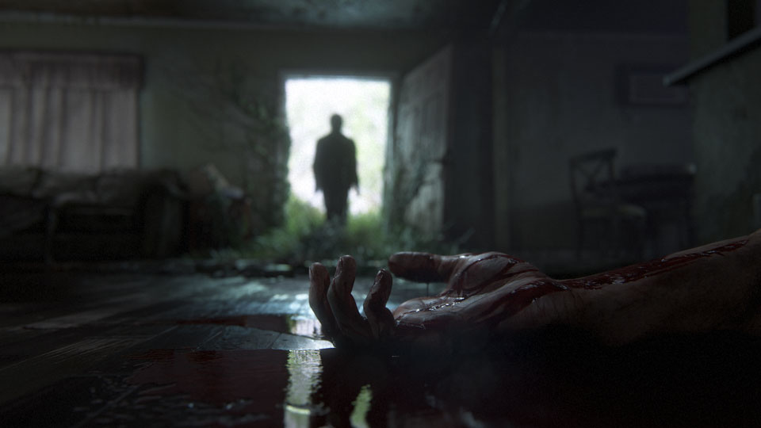
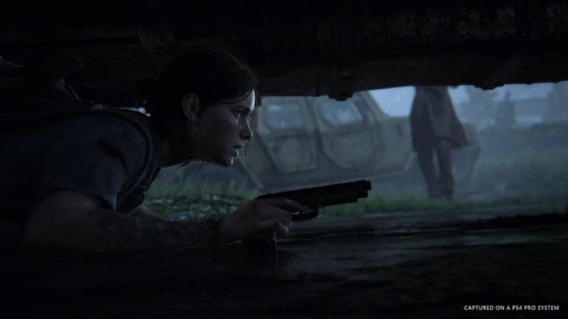
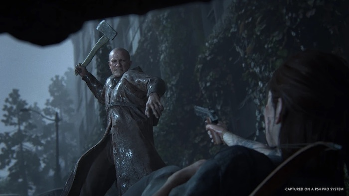

The Last of Us Part II
The Last of Us Part II is a third-person action-adventure, survival horror video game developed by Naughty Dog and published by Sony Interactive Entertainment. It was released on June 19, 2020. The game is the sequel to The Last of us and picks up the story of Ellie and Joel five years after the events of the original game.
Plot
The Last of Us Part II takes place five years after the events of the first game and nearly 25 years after the outbreak of the Cordyceps brain infection began. Ellie, who is now 19 years old, returns as the protagonist whom players assume control of. Joel, in his mid-fifties, also returns as a briefly playable character, as does Abby Anderson, who functions as the game's dual protagonist.
Joel and Ellie, having settled down in Tommy's settlement, live in relative peace within the thriving community. While there, Ellie has even managed to form friendships with Dina and Jesse. However, the survivors face constant threats from infected and other hostile survivors.
When a ,tragic event disrupts the tranquility of her life, a hate filled Ellie embarks on a journey to Seattle in a search for vengeance to carry out justice. As she hunts down those responsible one by one, she is confronted with the traumatizing physical and emotional consequences of her actions.
Gameplay
Ellie was originally intended to be the sole playable character in the game's singleplayer campaign. However, this changed at some point before release, with Joel, Ellie, and Abby all being playable for portions of the game. While multiplayer was originally planned to launch with the game, it was revealed by Lead Game Designer Emilia Schatz that the game will not feature multiplayer, a statement later confirmed by a representative for Sony.
The game features expanded traversal and stealth mechanics, including a jump button, ability to go prone and a dodge mechanic. Enemy AI has been improved, notably how human enemies will often communicate with each other, relaying information about Ellie's position through whistling. Crafting has also been expanded, along with new ammo types (such as explosive arrows). Two noteworthy additions are an "identification meter", which, in addition to the audio cue from the first game, alerts the player to how close an enemy is to seeing them (while it's white, the player still has the opportunity to hide, but once it turns red, they have been spotted), and an "injury gauge", which indicates when the player receives a serious wound (such as an arrow to the shoulder) and must press and hold the R1 button in order to treat it. Another new addition is the ability to pick up glass bottles and/or bricks, and throw them, while running.
 Enemies:
The game also features new enemy types as well. It contains two new infected types. The first is the shambler type that emits acidic spores similar to bloaters except these are also exhibited immediately after death. Further, there is also a special unique boss infected that is fought while playing as Abby. Further, there are also a new human enemy type that resemble the Brute enemies encountered in the Uncharted series, another game series created by Naughty Dog.